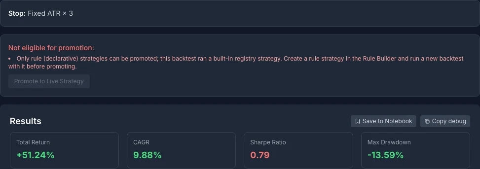
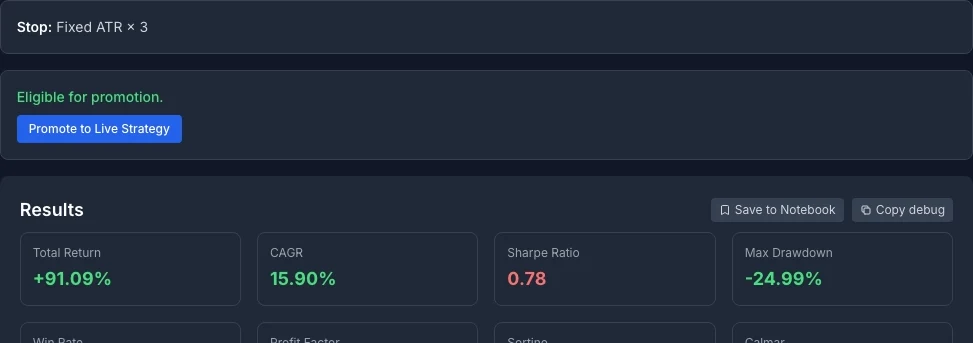
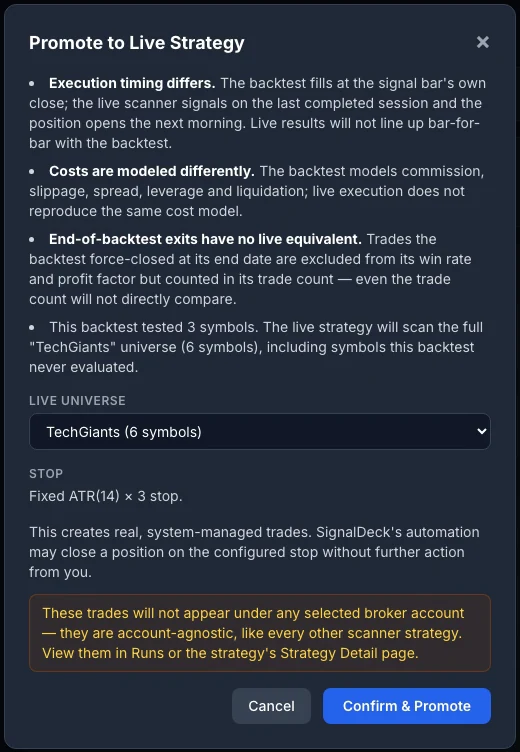
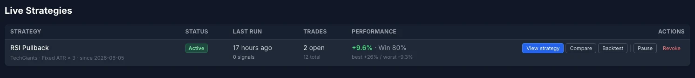
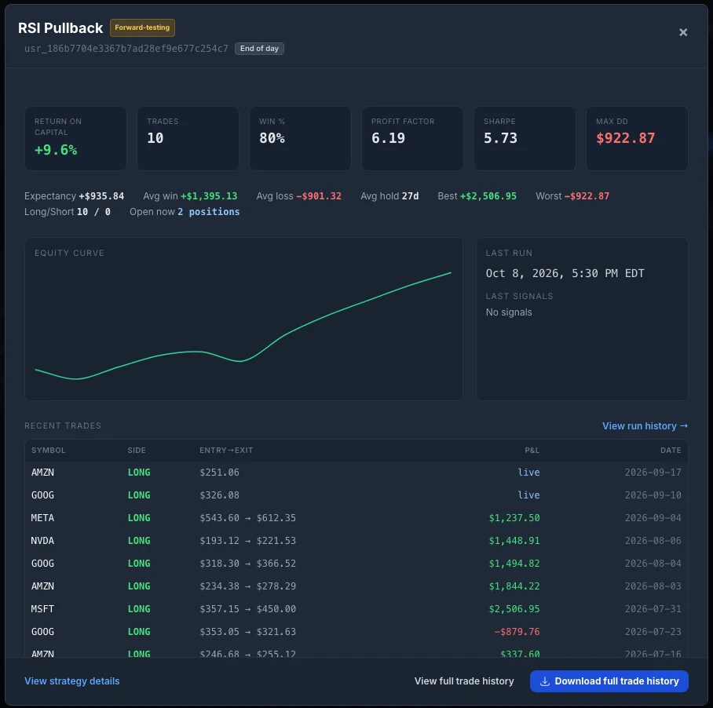
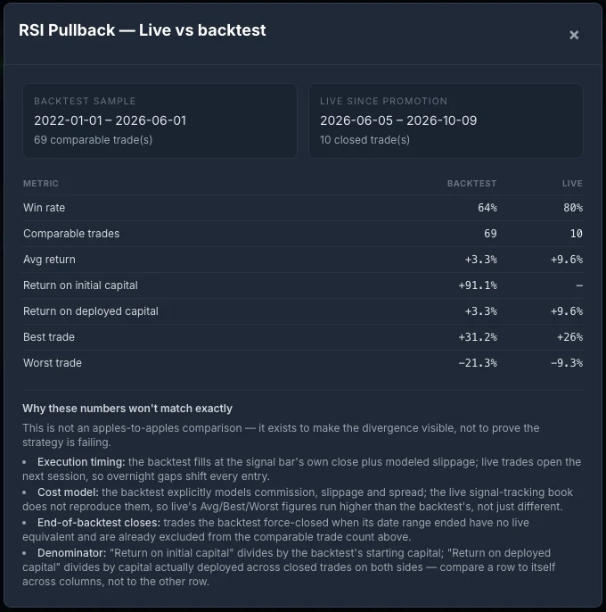

Most Backtests Should Not Go Live As They Are
A backtest is a simulation with every decision made in advance. That is its strength, and it is also why it flatters. The rules are applied at exactly the bar they fire on, the costs are whatever the inputs say, and the symbol list is whatever you typed. None of those hold once real sessions start arriving one at a time. Running the same rules forward is the cheapest honest test there is, and it only means something if what goes forward is the same strategy the backtest measured.
So SignalDeck does two things before it lets a backtest run live. It refuses backtests that cannot be run the same way live, and it tells you, in plain words, where the live run will differ from the backtest even when it can.
The Six Checks a Backtest Has to Pass
Every completed backtest shows a promotion panel under its results. It either says Eligible for promotion, or it says Not eligible and lists every reason at once, so you can fix them in one pass instead of discovering them one at a time.
- A rule strategy you built. Only strategies written in the Rule Builder can be promoted. The 16 built-in strategies cannot, because the live scanner runs your declared rules, not a library implementation.
- Stocks, on the daily timeframe. Live strategies scan stock universes after each session closes. Intraday, forex, futures and crypto backtests stay backtests for now.
- At least 10 closed trades. Trades the backtest force-closed at its end date do not count, because they never hit an exit rule.
- At least 180 days of history. Measured from the backtest's start date to its end date, not inferred from how many trades it took.
- Every symbol inside a scanner universe. The symbols you tested must all belong to one of the scanner's named universes, such as TechGiants, Nasdaq 100 Tech or the S&P 500. A symbol outside every universe is named in the reason.
- A stop the scanner can run. A fixed percentage stop, an ATR stop or a trailing ATR stop carries over. A backtest with no stop, or a trailing percentage stop, is refused. Leverage above 1 combined with equal-weight sizing is refused too.


Two things about these checks are deliberate. First, the floor is low on purpose. Ten trades over six months does not prove anything; the checks exist to reject the degenerate cases, not to certify an edge. Second, walk-forward analysis is advisory. If the backtest has a Likely Overfitted verdict, the panel shows it as a warning, and the decision stays yours.
The Four Things That Will Differ
Clicking Promote to Live Strategy opens a confirmation that is written to lower your expectations, not raise them. It lists four differences before you can confirm.
- Execution timing. The backtest fills at the signal bar's own close. Live, the scanner signals on the last completed session and the position opens the next morning, so every entry absorbs an overnight gap.
- Costs. The backtest models commission, slippage, spread, leverage and liquidation. The live record does not reproduce the same cost model.
- End-of-backtest exits. Trades the backtest force-closed at its end date have no live equivalent, so even the trade counts do not line up directly.
- The universe. The live strategy scans its whole universe, not just the symbols you tested.

The fourth difference is the one people miss. In the example above the backtest tested three symbols, Apple, Microsoft and Nvidia. Promoted into the TechGiants universe, it scans six, so half of what it trades live is a symbol it was never tested on. That can be what you want, since a rule that only works on the three names you happened to test is not much of a rule. But it means the live record is measuring a slightly different strategy, and you should know that before you compare the two.
What Promoting Actually Does
- It does not place orders with your broker. The strategy runs on SignalDeck's scanner after each session and keeps its own record of positions, entries and exits.
- Its trades are system-managed. SignalDeck's automation opens them and can close a position on the strategy's stop without any action from you.
- They stay out of your own book. The trades are account-agnostic, so they do not appear under a broker account, and they are kept out of your Today cards and your own risk checks. Your daily review stays about the trades you placed.
- You keep the controls. In Runs, Pause takes the strategy off the scanner, Resume puts it back, and Revoke ends it.
Reading the Live Record
The live strategy appears in Runs, under Live Strategies. On the day you promote it the row reads Never run and zero trades, which is exactly what it should say. The screenshots below show the same strategy four months later.

View strategy opens the full record: return on capital, win rate, profit factor, Sharpe and maximum drawdown, the equity curve, when the scanner last ran and what it signalled, and every trade the strategy has taken, with open positions marked live.

Live Against the Backtest: Read the Gap, Do Not Grade It
Compare puts the live record next to the backtest sample, metric by metric, with the reasons the two will never match written underneath it.

It is tempting to read that table as good news. Live is winning 80% of the time against 64% in the backtest, and its average trade is three times larger. Here is why that reading is premature.
| Backtest | Live | |
|---|---|---|
| Closed trades | 69 | 10 |
| Win rate | 64% | 80% |
| Rough 95% range for the win rate | 52% to 76% | 55% to 100% |
Those ranges use the simple binomial approximation, about two standard errors either side, and they are only a rough guide at ten trades. The point survives the approximation: the live range swallows the backtest's win rate whole. Ten trades cannot distinguish an 80% strategy from a 64% one, and the average trade is larger partly because the live record does not carry the backtest's cost model. The same arithmetic applies in the other direction. If the first ten live trades had come in at 50%, that would not have shown the strategy was broken either.
So treat the first few dozen live trades as a check that the strategy behaves as designed: it signals on the names and days you expect, the stops sit where the backtest put them, and nothing fires that should not. Save the verdict on the edge for a sample that can carry it. When the gap does get large and stays large, diagnosing backtest versus live divergence walks through the causes in the order they usually turn out to be the culprit.
What It Does Not Do
- No broker orders. Promotion tracks the strategy; it does not trade your account.
- Stocks on the daily timeframe only. Intraday, forex, futures and crypto strategies cannot be promoted yet.
- Rule strategies only. The built-in strategies are for backtesting. Rebuild one in the Rule Builder if you want to run it live.
- Named universes only. The whole-market universes are excluded, because their membership cannot be checked against a fixed list.
- No live cost model. The live record does not reproduce the backtest's commission and slippage, so compare like with like inside each column rather than across them.
- Not a certificate. Passing the checks means the strategy can be run the same way live. It says nothing about whether it will make money.
Watch the Walkthrough
The three-minute walkthrough on the SignalDeck YouTube channel goes through the whole path on screen: a backtest that is refused, one that passes, the confirmation, and the live record in Runs. It is part of the How SignalDeck Works playlist.
What to Do With This
Open the backtest you trust most and look at its promotion panel. If it is not eligible, the reasons are a useful audit in themselves: a backtest with no stop, or one tested on a handful of names you picked by hand, is telling you something about how far it can be trusted live. If it is eligible, read the four differences before you confirm, then leave it alone long enough for the live record to say something.
Frequently Asked Questions
Can I promote any backtest to a live strategy?
No. A backtest can be promoted only if it ran a rule strategy you built in the Rule Builder, on stocks, on the daily timeframe, with at least 10 closed trades over at least 180 days of history, every symbol inside one of the scanner's universes, and a stop the live scanner can run: a fixed percentage stop, an ATR stop or a trailing ATR stop. Built-in strategies cannot be promoted. When a backtest fails, SignalDeck lists every reason at once so you can fix them in one pass.
Does promoting a backtest place orders with my broker?
No. A promoted strategy runs on SignalDeck's scanner after each session and opens and closes positions in its own tracked record, which you see in Runs and on the strategy's Strategy Detail page. Those trades are system-managed and account-agnostic: they do not appear under any broker account and are kept out of your own Today cards and risk checks. SignalDeck's automation can close a position on the strategy's stop without any action from you.
Does a bad walk-forward result block promotion?
No. Walk-forward analysis is advisory. If the backtest has a Likely Overfitted verdict, the promotion panel shows it as a warning, but it never blocks the promotion. The checks that do block it are the strategy type, instrument, timeframe, trade count, history length, universe and stop.
Why will my live results not match the backtest?
Four reasons, which SignalDeck shows before you confirm. The backtest fills at the signal bar's close, while the live position opens at the next session's open. Costs are modelled differently. Trades the backtest force-closed at its end date have no live equivalent. And the live strategy scans its whole universe, including symbols the backtest never tested. The comparison view exists to make that gap visible, not to grade the strategy.
How many live trades do I need before the comparison means anything?
More than most people expect. With 10 closed trades, a win rate has a margin of error of roughly 25 percentage points either way, so 80% live against a 64% backtest is well inside the noise. Treat the first few dozen live trades as a check that the strategy behaves as designed, not as a verdict on its edge.
Which plan includes live strategies?
Promoting a backtest to a live strategy is part of Pro and Elite. Pausing, resuming and revoking a strategy you have already promoted always stays available, and resuming checks your plan's live-strategy limit the same way promoting does.
Related Articles
Backtest vs Live Results: Diagnosing the Divergence
The causes of a backtest-to-live gap, ranked by how often they are the culprit.
What a Backtest Cannot Tell You About Your Trading
What happens between the signal and the fill, and why only a journal records it.
Walk-Forward Analysis: The Overfitting Detector
The test that warns you, before promotion, that a backtest may be curve-fit.
What Is Grid Search Parameter Optimization?
Why the best parameters on history are rarely the ones to take live.
Take a backtest live, and keep it honest
Backtest a rule strategy, promote it to the live scanner, and compare what it does against what it promised. Backtesting is on every plan; promoting a backtest to a live strategy is part of Pro ($30/mo) and Elite ($50/mo).